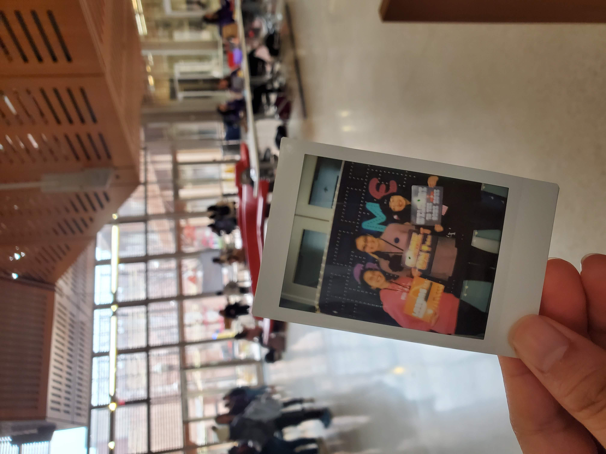
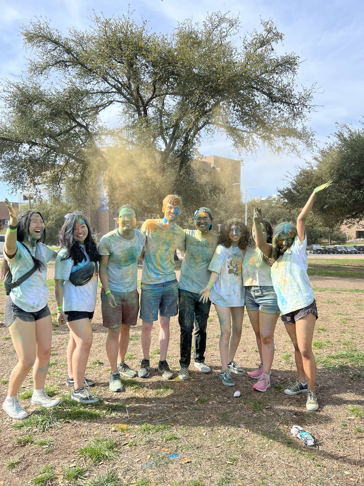
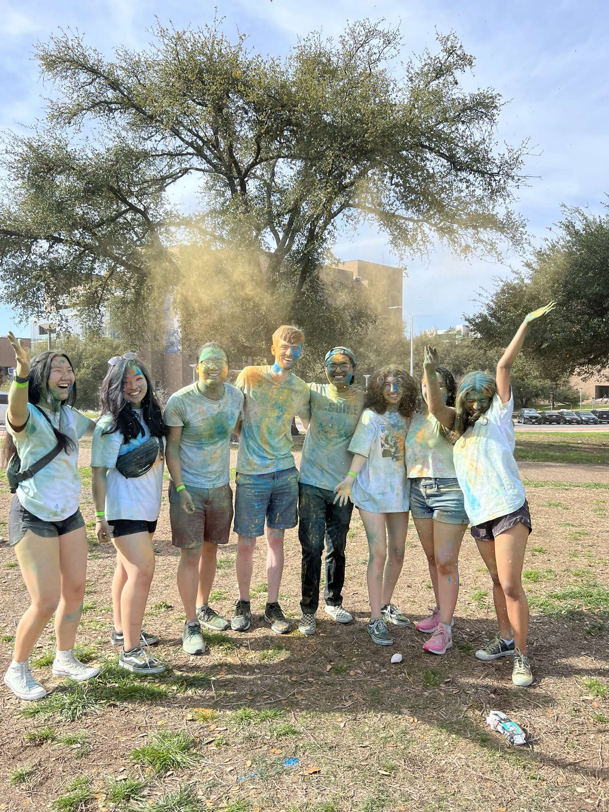

8 Months Full of Learning: Tesla
I didn't look into engineering as a possiblty until I started applying for college and figuring out what major to pick. Freshman year, I always been interested in Elon Musk and and his entrenprenurship as well as business model. I had watched interviews and read his books. I had even joined a hyperloop team and met people with similar passions as me. That is where my journey started...Texas Guadaloop
If you told me, 6 months or even a year ago that I was going to be working at one of my dream companies -- I would have laughed at even the thought of it.
Pre-Tesla
So a lot of people ask me how did I get into Tesla as my first EVER internship without any prior work experiene. I want to say it was just luck -- me being at a place at the right moment. However, I feel me outlining some Tesla moment might be helpful for others. First, I applied to Tesla like 5 times or more and all of the time I had never heard back. However, I got emails about an event on March 16, 2022: "A Study Break w/ Tesla: An Intro to Cell Engineering". I attended ALL of them -- no matter it was the same information. It was to the point that I remember the mission statement by heart: 'accelerating the world’s transition to sustainable energy'. I had attended all. I just knew I was going to meet some incredible people. One of the series had a gentleman named, Lual (David) Akuien. Fast forward, AIChE was hosting a conference for the Southwest Regional Conferene 2022. I paid and attended the conference just to meet one company -- Tesla. I didn't go into the conference with the expectation of getting an internship. I just wanted to see and learn more about what the company is doing aside from the news. I also had a funny experience with signing up for a jeopardy competition for AIChE expecting for the jeopardy to be fun facts, but it turned out to be facts about chemcial engineering. I was a sophomore and only had a few chemical engineering classes -- so that was a cure memory and one for the books, but the team and I was able to win 2nd place! I attended their presentation and met three gentleman: Tom Wood, Andrés Orlando and you guess it -- Lual Akuien. I approached Lual first and told him that I met him through the Tesla Summer Series. We talked and our conversation wasn't about Tesla, but himself and our hobbies. I felt like I was catching up with an old friend. Later, on the conference, I signed up for the Jeoproary Competition (keep in mind I thought this was fun facts Jeoproary NOT Chemical Engineering Jeoproary -- I learned about this the day of and did it for the kicks and giggles). Our team ended up getting 2nd place! After, I sitted around and noticed Tom left, but Andrés was still there. I approached him since he was a mechanical engineer and was like "Do you love F1?" He didn't know what it was and asked about it. I said they are fast cars. We joked around and I told him that I love mechanical engineering and do a lot of it. He asked for my resume and he was like "you aren't a mechanical engineer! You lied to me (as a joke)." But I was like no I love mechanical engineering -- I would like to say that chemical engineering is my brain (how I think -- asking and digging those why? and how things work question?) and mechanical engineering is my heart. I am also really interested in simulation so I asked him about his powder flow simulation and we talked about that for a while and my involvement with Texas Guadaloop. He then stopped me said let's continue this gave him email and told me to send him an updated copy of my resume. I was estatic and immediately called my family once I got home on April 30, 2022. I got an interview the next week on May 16, 2022. I didn't hear back until I was towards the end of my study abroad in Denmark at 9pm-10pm local time on June 23, 2022 (which is June 22, 2022 2:20pm) for an offer -- the rest is history.
**Note: As an employer for Tesla -- I am under a strict NDA. I can't share what I did exactly, but I can talk about my feelings and people I met (less-technical).
Cathode, Manufacturing Engineering Intern
Week 1
I remember I couldn't sleep the night before. I can't remember if it was because I was nervous or excited or mixed or other emotions that I can't remember. Nevertheless, I woke up at 5am and to arrive to COTA early morning because the call time to be at COTA was 6:45am. Little did I know that they were going to start around 9am. I got to learn more about Tesla, safety, and organizations they have in the company. I also got my badge and laptop it was getting these items that I was like "wow. it is official." The orientation ended at 4pm, but I didn't get to meet Andrés because it was at COTA. It wasn't until the 2nd Day did I get to meet the team and Andrés. I felt more nervous because I knew I wanted to do excellent, not just good. I wanted to change and optimize and make improvements -- be the great intern that see the issues. I got a project already on my first week since I finished the training and downloading software as quick as possible to design something based on certain constraints and use items that are readlly avaliable. I also learned about the process that I was building, but it wasn't until 3 months did I feel that I had a full grasp of the concept. It was the first week that I went to an intern party that weekend. My social battery was actually dead, but I knew in my heart that if I didn't go to the party then I would never go and make excuses to not meet other interns -- this was espeically hard because I was the only intern in my department at the time. Little did I know that one of the intern I had met at the party would be the intern for my next team that I would internally transfer to in Tesla. I would also say that he had one of the coolest projects and I had a tour with him the following weekend to understand his projects more detailed. I also found myself working on the weekend the first week because I thought to myself if I finish the work the next week and started to set extreme goals to myself to push myself and grow further than I had imagined. I presented my "finished" work that Monday and I remember being nervous going up to my supervisor for the project and ask for their advice -- I wanted it to be good the first time. Spoiler Alert: It wasn't good the first time, but my supervisor gave me critics on what I should change that helepd me grow. I also remember that my third day -- Andrés asked me to write a bio. I was funny and a learning experience because Tesla was my first internship so I never learned to write a bio before...I wrote one that was similar to a bio in a college presentation for faculty and staff, but I realized that a bio in industry is really different and I am grateful that Andrés fixed my bio before send it to the team's group email. An industry email has their previous experience, where they graduated and where they are from with some hobbies about themselves with maybe a cute picture of them and their pet.Week 2 and so on...
I started to learn more of the process and became involve in events happening on the factory such as Asian New Year with Tesla letting employers sign the Model Y hoods and got red envelopes. The 2nd week I started to value going outside and exploring Austin more than I did when I was in school since I had a car and I also had the time to explore and do stuff that I loved. After, exploring the city, Tesla has discounts of events happening in Austin for the employees so I bought tickets for my brother and I to see the Austin Spurs game. Our first professional basket game. The basketball players were so fast moving across the court. I later joined my friends for an ice cream party that night. I started to value a life of relaxing and understanding that I was burnt out in Fall 2023 from school and didn't realize it. I soon hang out with my Tesla intern and full-time friends and build a community there from going kayaking and enjoying the Austin weather and doing escape rooms.

I had then learned about other projects my team was working on and had my first 3 hr long meeting with my team to learn about the project's process. I started to understand and applied and see the coworkers that I worked with were from all over from ExxonMobil to Dow and others. The meeting was one of the only times I used chemical engineering by optimizing a process using molar flow rates calculations. Later, one of our coworkers is in a band so our team went to support him playing -- it was my first "happy hour." A term to socialize with the team outside of work -- really fun and cool to meet others outside of the work environment and learn more about them and their hobbies. It was also a place for me to learn of different projects that my coworkers are doing and maybe see if I can learn  from them by getting a hands-on project. It was during this time that I was also an undergraduate research assisstant for Dr. Brennecke. It was diffcult to balance the lab and Tesla with me coming home at late nights, but it taught me to understand to focus one thing at a time. You can't be at two places at once -- I was putting uncessary stress on myself because I was trying to be an employee and a student at the same time. I realized their is a balance and started to be less of a student and more industry focus...but still a student and a kid. I still partcipated in events and Hackathons and talent shows. I partcipated in the WiCS Hacks 2023 again and this time when without a group. It was probably one of the best experience because I went in with no expectations and learned so much about coding from different people. I learned about databases from Kaggle (that I used for my PANDAs learning on COVID-19), Figma (to design websites), being open to communicate different ideas to new people, W3Schools for learning, JupiterNotebook, the command of CTRL+D to change all values.
My 1 Month Teslaveriary
Within less or at the month mark, I was able to finish one of my mechanical design projects and send out of purchasing order for it to be fabricated. It was fun and I was learning more everyday by using AutoCAD and SolidWorks daily. I started to have more skill and gain a better understand of pushing myself by thinking on repetitve tasks on how to optimize my learning and productivity to make the job faster. I went to several other happy hours from different teams from meeting and introducing myself to the peopel I see just by going up to them and trying to learn what they do for Tesla. One my second happy hour with my team, I learned that one of my coworkers did simulation modelling: EDEM simulation for powder handling and gain an experience of a different type of modeling compared to ANSYS and other simulation. It was a little after my one month Teslaveriary that Texas Guadaloop started recruiting for the spring and that occupied my weekends, but I still did things outside my comfort zone and learned Latin Dance with one of my pro-friends. Trust me -- I learned to sway those hips! It was also during the month of February that I was applying to be the new president of Texas Guadaloop (an organization that changed my life that encouraged and allowed me to embrace being a chemcial and mechanical at the same time to persue that adventure). I also remember my first desk buddy, Elise Ras. One of the most hardworking people I have meant and such an inspiring to keep working hard. I remember I was updating something and Elise was doing it with me since it was high critical path. We were in the office late at night and we called each other, but we didn't realize we were both still in the office. We bonded on very similar hobbies and Elise was also the other person that interviewed me with Andrés. Elise was such an outgoing and outdoorisy person and we even bonded with broadway shows. It was one of the first interactions that broke my shell and reminded me that the full-time had life outside of Tesla that I forgot after being with the company for one month. I had the opportunities and money to be able to attend the broadway show: Aladdin with the student discount. It was that moment that I remembered a saying that my mom always talked about that when we are young we have the energy, time, but not the money , but when we are older -- we don't have the energy, but we have time and money. It was that moment that I had a equilibrium of all three of time, energy and money. The perfect tri-fec-A! The same day on February 19, 2023 -- I got a call from Trevor that I was the next president of Texas Guadaloop! The next week on February 21, 2023 -- I had a weekly meeting with Andrés and he said out of the blue that I was doing a fastatics job at work! I was escatic that I took a picture of my reaction. It was nice to have your manager recognize your work to you and it is something that I applied into Texas Guadaloop and future leadership positions. A simple "thank you" was enough to push me forward. I also bought some cool Tesla merch and employee exclusive merch and some merch for my friends because I got an employee discount.
A Spontaneous Trip
On February 22, 2023, I was at Mozart's Coffee with some of my friends after watching Engineerign HQ livestream from Tesla and one of my friends was going to New York. I just said as a joke of what if I went with you. He proceeded to call his mom and sister and they agreed with excitment. We went home, bought tickets and that was a Wednesday -- I left Friday after work. On Thurs, my friends and I went to support one of our friends hosting a review sessions for a chemical engineering class. That Friday, we broaded the flight and I read proposals of all the president and VPs that applied to Texas Guadaloop to gain a better understanding of the issues and prepare for my 1:1 meetings with them if I had questions. During, my trip in NY, I felt like a local New Yorker with my friend's family and tried delicious Filipino food. We went to explore Time Square and I tried Jollibee for the first time. It was so good. It was my second time in New York, but it was beautiful -- the fast pace energy encourage me to keep moving towards my goals faster each day. They were showing Hamilton at the time and we were able to talk to the Hamilton cast -- some of the nicest and sweeatest people. We traveled and explore the city by going to subways and the 9/11 memorial. We even saw the UT Austin - Chemical Engineering Clocktower at NY. One my last day of my spontaneous weekend trip, I took an inspiring pick next a satuture. It is interesting looking back at it because it seems a before and after of my younger self as a "blank slate" to someone to a grown women from mistakes, success growing from my experiences. The internship program also has great opportunities and events that they host that I found really informative like future careers, internship and guest speakers. I also was able to host events
with Texas Guadaloop on inviting my previous recruiter, Lual, on tips to help for Guadaloop members and social events for Guadaloop and see if there is any problems
and put of the fires to get my face out with the members and meet them -- as an open face for them
to reach out. I attended UT Austin's Holi event that I found out my full-time friends at Tesla also went to celebrate.
It was a little past month three...spring break. I gather the cureoage to ask Andrés if I can work from home for spring break. Andrés approved of my request and it was the best because I miss my family since I was just
working straight.

Over the weekend, I attended the Houston Rodeo -- a family tradition. It was also durign that week that I saw a post on Tesla's ERG page of an internship opportunity. A man named
Dmetrius Alexander -- posted it and I reached because I wanted to learn of different teams. I was also open with telling Andrés that I was reaching out of other teams to be respectful, because we had
talked of extending my internship to summer after 2 weeks of my internship. I jsut wanted to grow and explore other teams because this was my first internship. I drove back to Austin alone because I had to go to
be at SXSW conference since Texas Guadaloop was a speaker. It was cool to advocate for a more sustainable transportation method to a big audience and I got the opportunity to host -- EuroTube's R&D Director, Lorenzo Benedetti.
I had dropped Lorenzo at the airport and went straight to work to finish some stuff that weekend since the airport was near work.
March 20, 2023 -- I ran my first meeting as president of Texas Guadaloop, the room was so full, but it was really nice to have my friends come to support me.
March 22, 2023 -- I had a meeting with Dmetrius and we talked after the meeting he suggested me to reach out to Nick Spaudling's team that delaut of more mechanical design and my interest than the original internship post. Dmetrius
sent a message to Nick and the job post hiring managers and I had a meeting with both.
The internship program also has great opportunities and events that they host that I found really informative like future careers, internship and guest speakers. I also was able to host events
with Texas Guadaloop on inviting my previous recruiter, Lual, on tips to help for Guadaloop members and social events for Guadaloop and see if there is any problems
and put of the fires to get my face out with the members and meet them -- as an open face for them
to reach out. I attended UT Austin's Holi event that I found out my full-time friends at Tesla also went to celebrate.
It was a little past month three...spring break. I gather the cureoage to ask Andrés if I can work from home for spring break. Andrés approved of my request and it was the best because I miss my family since I was just
working straight.

Over the weekend, I attended the Houston Rodeo -- a family tradition. It was also durign that week that I saw a post on Tesla's ERG page of an internship opportunity. A man named
Dmetrius Alexander -- posted it and I reached because I wanted to learn of different teams. I was also open with telling Andrés that I was reaching out of other teams to be respectful, because we had
talked of extending my internship to summer after 2 weeks of my internship. I jsut wanted to grow and explore other teams because this was my first internship. I drove back to Austin alone because I had to go to
be at SXSW conference since Texas Guadaloop was a speaker. It was cool to advocate for a more sustainable transportation method to a big audience and I got the opportunity to host -- EuroTube's R&D Director, Lorenzo Benedetti.
I had dropped Lorenzo at the airport and went straight to work to finish some stuff that weekend since the airport was near work.
March 20, 2023 -- I ran my first meeting as president of Texas Guadaloop, the room was so full, but it was really nice to have my friends come to support me.
March 22, 2023 -- I had a meeting with Dmetrius and we talked after the meeting he suggested me to reach out to Nick Spaudling's team that delaut of more mechanical design and my interest than the original internship post. Dmetrius
sent a message to Nick and the job post hiring managers and I had a meeting with both.
 Nick told me that he was already full for the head-count on interns, but I still was interested to learn more about his team.
I remember after the meeting not sure what I did -- all I did to prepare was have a powerpoint of my projects of descriptions and ask questions that he said let's see if I can add a position on the team.
It was also that weekend that I saw Nick's team at a party and joined and played volleyball with other full-time and interns. I would say the team and I won 3-0.
March 30, 2023 -- my first ever HAZOP and another one of the only chemical engineering into the job.
The Friday of March 31. I went to the 2023 AIChE Southwest Regional Conference at Texas A&M. The event signified a year since I had met Andrés and a decision that changed my life.
It was really cool to see since the event changed my life and it was the first time that I came with my brother as well since he started as a freshman at UT Austin. It was amazing to
explore Aggieland and its surrounding area. I was able to stay with my high school friend, Kameela! The trip was top off with my family and I surprising him for my brother's birthday at Chiptole!
It was kind of funny because I needed my brother to go to Chiptole so I said the car was parked there but he didn't realize my parents were there surprising him from Houston. Ended the trip the next
day to a famous place at A&M that one of my coworkers suggested called Dixie Chicken. The resturant was a bar type feel with names engraved into the tables.
Nick told me that he was already full for the head-count on interns, but I still was interested to learn more about his team.
I remember after the meeting not sure what I did -- all I did to prepare was have a powerpoint of my projects of descriptions and ask questions that he said let's see if I can add a position on the team.
It was also that weekend that I saw Nick's team at a party and joined and played volleyball with other full-time and interns. I would say the team and I won 3-0.
March 30, 2023 -- my first ever HAZOP and another one of the only chemical engineering into the job.
The Friday of March 31. I went to the 2023 AIChE Southwest Regional Conference at Texas A&M. The event signified a year since I had met Andrés and a decision that changed my life.
It was really cool to see since the event changed my life and it was the first time that I came with my brother as well since he started as a freshman at UT Austin. It was amazing to
explore Aggieland and its surrounding area. I was able to stay with my high school friend, Kameela! The trip was top off with my family and I surprising him for my brother's birthday at Chiptole!
It was kind of funny because I needed my brother to go to Chiptole so I said the car was parked there but he didn't realize my parents were there surprising him from Houston. Ended the trip the next
day to a famous place at A&M that one of my coworkers suggested called Dixie Chicken. The resturant was a bar type feel with names engraved into the tables.
I had the opportunity to learn from engineers that used to work at power plants to building rockets and P.E. licenses. I also had the opportunity to partcipate in multiple speakers events from engineers, recruiters, managers, and board members. I also partcipated in variety of tours and coffee chats 1:1 with some of the interns and full-team to learn more of what is going on outside of my department and it also helped for me to apply some aspects into my work. I also joined Employee Resource Group (ERG) events and calls. I also feel it is important to learn skills outside and steps out from your comfort zone. I was able to learn a little of controls. As the internship went on, I notcied myself finding problems in the project life cycle, and figured out how engieners dealt with it. A lot of projects I had felt overwhelmed at first because of looking at the goal. I didn't know where to start. I found out just taking the time to break the projects into key action items steps was useful and being ok to discuss these steps with your manager or coworkers to make sure you aren't missing something. Afterall you are an intern and you are here to learn. I also noticed that asking questions will be faster most times than trying hours to figure it out with Tesla's fast turnaround times. Of course -- try to figure it out yourself, but if you notice yourself not making progress. It might be time for you to ask a question. These questions gave me the opportunity to deep dive into finding faster ways to compelte the project as well. Conclusion, I was able to reduce costs and increase simplication in improvement to a lot of the design based on the specification constraints. I felt that this prepared me a lot for my next role in Tesla. I also learned a bit about material properties for some design and understanding the importance of understanding whole project scope. For example, a smooth property and/or a see-through material based on what is needed for the project. I also found it is best to find and design parts based on wide avaliable parts and limiting the custom parts (if able) like using McMaster-Carr or other sources. It is also important in design to understand how the part is being manufactured and put together to help machinist. It is also sometimes best to redraw or redesign a part to correct errors in the design. I also got the opportunity to learn of different flow properties for granular mechanics. I learned a lot through this assignment as it made me realize how much detail the design must have to be manufacturable and accurate to the engineer’s desire. I also learned designing is one, but manufacturing is another, and mass manufacturing is another process as well. I also learned the value of patience because sometimes design is based on intuition of experience and needs time to learn of the correctness of part designs. For example, choosign the type of a object to fit on a part based on dimension and size and knowing from experience/failures what is best for the project. It is also important to make sure that the design is flushed with each other -- no matter how annoying to fix it might be because tolerance errors as always issues in design to manufacturing. One of my favorite project invovled all my skill set from 2D and 3D space, controls, structural, safety, process design and cross-collaboration with other teams. I also was able to use another excess equipment to use that in the project to save cost and figure out the the missing information and constraints and what we have to safe cost. I noticed a lot of times when given a project -- the information isn't fully given. You have to ask the right questions to get the right answer.I also employed engineering fundamentals to solve challenging problems throughout the design, installation, integration, and testing phases of the project.The DEM simulation helped me realize that powder handling is so unique that the simulations can’t 100% accurately portray real life as size distribution, equipment, velocity, and material properties matter and gave me the opportunity to learn theories and validation testing applied into the project. It is inspiring to hear, and the co-op reminds me how much I love learning despite the distractions of grades, career growth, and friends. I saw how valuable a higher education than my undergraduate degree can help me in my future career as I talked with my Ph.D. and master’s degree co-worker. The co-op also highlighted and reminded me of why I became an engineer. I remember how much I love to problem-solve. I also learned to plan on improving by communicating all tasks so that I can compartmentalize my work efforts as there is so many works going on at Tesla. Vivek taught me to laugh and have fun at my job to be myself.
Software Learned and Used
Recommand to walk the site to see 2D and 3D model come to life in the space. Understand process five steps ahead and behind. Importance of flexibility in the dimensions of design -- what will change the most and sketch the SolidWorks so won't break.
Elon's Motto:
I am already more motivated than ever to learn more about manufacturing and process design. I also signed up for some mechanical engineering technical elective classes, so this way I can improve my mechanical engineering skills. The most valuable aspects of this work experience were the interactions with the other engineers. The talks with the other engineers and asking questions were what really helped me gain knowledge about the industry and company. My prior knowledge in mechanical engineering, simulation, and coding was from enrolling in classes or self-taught. This forced me to learn quickly on the job. However, with the co-op term, I learned much more about the industry than the other experiences. I was able to build a solid foundation to increase my self-confidence in decision-making, and it made me realize I still have much more to learn. I noticed how important general engineering skills like SolidWorks, mass balances, and basic coding are at the workplace. I also realized that leveraging technology to solve problems is important as Tesla's mindset is "first-principles" by solving problems through fundamental simplicities ideas. I want to apply this idea to my academic success in the classroom. Tesla even peaked my interest to pursue a master’s in mechanical engineering as an academic goal. I want to work for a company that falls in line with my life goal to contribute to something bigger than myself that will change the world for the better after graduating. I am extremely grateful for the opportunity to co-op in an environment where so many people are pushing the boundaries of science and engineering.
Coming Up
End of Tesla Blog
- To Be Continued: Blog Ends on April 30, 2023